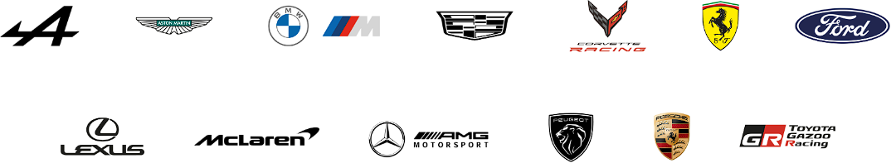

Balance of Performance (BoP) is a set of rules designed to make racing fair between cars of very different designs and technologies. Because manufacturers in both Hypercar and LMGT3 use different engines, aerodynamics, and chassis concepts, one car could naturally have a big advantage over others if left unchecked. BoP ensures that no single car dominates purely because of its design, keeping the competition close and encouraging a diverse grid.
BoP works by adjusting key performance factors of each car before a race. The main tools are minimum weight, power output, fuel tank size, and sometimes aero restrictions. For example, if a car has shown a consistent straight-line speed advantage, it might be given less engine power or a smaller fuel tank, meaning it needs to refuel more often. Conversely, a car that has been struggling could be allowed more horsepower or a lighter weight. These changes are not made mid-race but are set in the official regulations issued before each round, based on data collected from previous events, simulations, and even wind tunnel testing.
In Hypercar, BoP is particularly important because manufacturers are allowed to build cars to two different technical rulesets: LMH (Le Mans Hypercar) and LMDh (Le Mans Daytona hybrid). LMH cars can be fully bespoke prototypes, while LMDh cars use a common hybrid system and chassis supplied by specialist constructors. Without BoP, these very different designs would not be able to compete on equal terms, but with it, Toyota, Ferrari, Porsche, Cadillac, Peugeot, BMW, and others can all fight for wins. In LMGT3, BoP is equally crucial because GT cars are based on road-going models that vary hugely in layout—front-engine vs mid-engine, turbocharged vs naturally aspirated—and yet they need to lap at comparable speeds.
